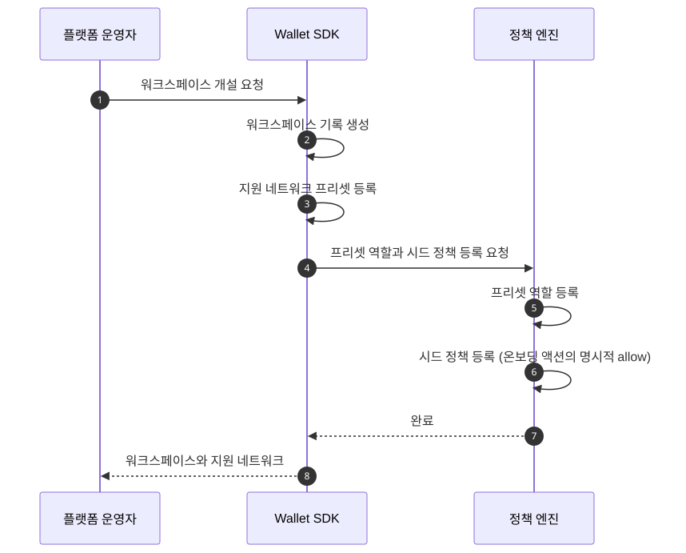
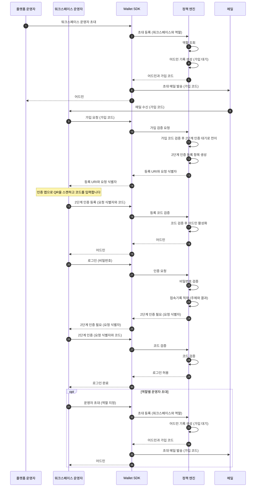
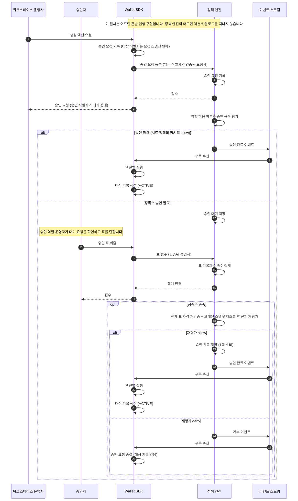
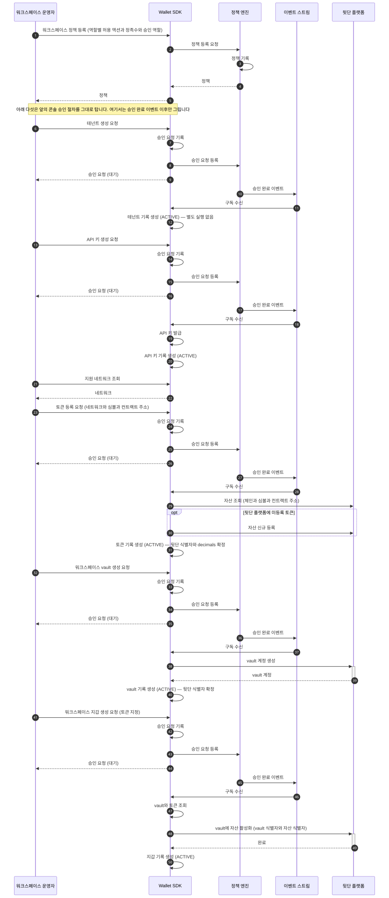

온보딩
온보딩은 워크스페이스를 열고 운영자를 들이고 카탈로그와 vault를 세우는 하나의 과정입니다. 이 페이지는 개설과 시드 정책, 운영자 초대와 2단계 인증, 생성 액션 다섯의 승인 절차를 순서대로 다룹니다.
여기서 만들어지는 것이 이후 모든 자금 이동의 전제입니다. 파트너 대상 API의 격리 키인 테넌트도 API 키도 토큰도 이 구간에서 나옵니다.
개설은 시드 정책까지 함께 앉힙니다

개설은 플랫폼 운영자가 한 번 수행합니다. 워크스페이스만 만드는 것이 아니라 그 안에서 처음 움직일 수 있게 하는 최소 구성까지 함께 앉힙니다.
앉는 것은 셋입니다. 지원 네트워크 프리셋, 프리셋 역할, 그리고 온보딩 액션을 열어 주는 시드 정책입니다. 시드 정책은 워크스페이스 등록이 심는 첫 번들이고, 저작의 출발점이지 결과가 아닙니다.
시드 정책이 없으면 첫 액션이 막힙니다
정책 엔진의 기본값은 거부입니다. 어떤 룰도 매칭되지 않으면 그 요청은 거부로 끝납니다.
그래서 시드 정책은 예외가 아니라 명시적 allow 룰입니다. 온보딩 액션을 이름으로 허용하는 룰을 개설 시점에 심어 두는 것이고, 기본 거부 자체는 그대로 남습니다.
워크스페이스가 자기 정책을 활성화한 뒤부터는 그 정책이 기준이 됩니다. 그때부터 같은 액션에 승인이 성립하는 데 필요한 최소 승인자 수인 정족수가 적용됩니다.
운영자는 초대로 들어오고 2단계 인증을 마쳐야 활성이 됩니다
다이어그램의 배역은 다섯입니다.
- 플랫폼 운영자: Workspace 생성과 시드 정책의 권한 뿌리인 합작 법인 쪽 운영자입니다
- 워크스페이스 운영자: 계약 소유자와 인증 방식이 하나로 정해지는 API 경로 묶음인 운영자 표면(자세히)을 부르는 사람 주체입니다. API 키와 달리 사람을 식별합니다
- Wallet SDK: 파트너 대상 API를 받아 정책 엔진에 판단을 묻고 서명 인프라에 제출하는 서버 컴포넌트입니다
- 정책 엔진: 자금을 움직이는 요청이 서명 인프라로 가기 전에 그 요청을 심사하는 별도 시스템입니다
- 메일: 초대 메일을 운영자에게 나르는 채널입니다

가입 대기 상태로는 로그인할 수 없습니다. 2단계 인증 등록을 마쳐야 어드민이 활성이 되고, 그 순서를 뒤집는 경로는 없습니다.
등록 URI와 요청 식별자가 두 단계를 잇습니다. 등록에서 받은 요청 식별자를 코드와 함께 되돌려 줘야 검증이 성립합니다.
첫 운영자가 활성이 되면 그 뒤로는 자기가 다른 운영자를 초대합니다. 역할을 지정해 초대하고, 초대받은 쪽은 같은 가입 절차를 거칩니다.
어드민 신원은 정책 엔진이 소유합니다
역할·어드민·2단계 인증 자격증명은 전부 정책 엔진 쪽 저장소에 있습니다. Wallet SDK는 그 저장소를 직접 만지지 않고 정책 엔진을 거쳐서만 접근합니다.
그래서 위 다이어그램의 초대·가입·2단계 인증은 전부 정책 엔진 안에서 일어납니다. Wallet SDK가 하는 일은 요청을 넘기고 결과를 되돌려 주는 것뿐이고, 자격증명을 저장하지 않습니다.
로그인 시도는 접속기록으로 남습니다. 주체와 결과를 함께 적재하며, 이것이 인증 통제를 증명하는 근거입니다.
로그인은 정책 판단이 아니라 인증입니다
로그인과 2단계 인증은 정책 엔진의 판단 요청 계약을 따르지 않습니다. 정책 엔진이 어드민 저장소 소유자로서 제공하는 별도 동기 API입니다.
정책 체크는 로그인 이후의 액션에 적용됩니다. 역할이 그 액션을 할 수 있는지, 승인이 몇 표 필요한지가 그때 평가됩니다.
두 자격이 같은 표면에 공존하는 방식은 표면과 인증에 있습니다.
생성 액션 다섯은 콘솔이 자기 승인 절차로 처리합니다
테넌트·API 키·토큰·워크스페이스 vault·워크스페이스 지갑입니다. 다섯이 거치는 절차는 같고 갈리는 것은 승인 완료 이후의 실행 로직뿐입니다.
이 다섯은 정책 엔진의 어드민 액션 카탈로그에 없습니다. 어드민 액션은 어드민 권한과 정책 자체를 바꾸는 연산들입니다. 카탈로그에 등재된 여덟은 룰 커널이 판정하지만, 이 다섯의 승인은 어드민 콘솔 현행 구현이 담당합니다.
카탈로그 밖이라는 것이 통제 밖이라는 뜻은 아닙니다. 역할별 허용 액션과 정족수와 승인 역할은 워크스페이스 정책으로 등록되고, 그 정책이 이 다섯에 적용됩니다.
앞 다이어그램에 없던 배역은 둘입니다.
- 승인자: 승인 역할을 가진 운영자입니다. 대기 중인 요청에 표를 던집니다
- 이벤트 스트림: 승인 완료와 거부 이벤트를 구독자에게 나르는 경로입니다

요청 시점에는 대상 기록을 만들지 않습니다
요청을 받으면 승인 요청만 쌓고 대상 테이블은 건드리지 않습니다. 테넌트도 토큰도 vault도 승인이 끝난 뒤에야 행이 생깁니다.
그래서 거부로 끝나도 지울 것이 없습니다. 접수 때 대기 상태 행을 만들어 두면 거부·만료마다 되돌리는 경로가 필요하고, 그 되돌리기가 실패하는 경우를 또 다뤄야 합니다.
대기 상태는 승인 요청의 것이지 대상 엔티티의 것이 아닙니다. 대상 엔티티의 상태는 활성·비활성 둘뿐이고 그 사이에 중간값을 두지 않습니다.
정족수가 차면 그때 다시 봅니다
표가 다 모여도 바로 통과가 아닙니다. 표를 던진 승인자의 자격을 전부 다시 검증합니다. 그다음 오래된 스냅샷을 다시 읽고 전체를 재평가한 뒤에야 승인이 완료됩니다.
정족수는 며칠씩 걸릴 수 있습니다. 재개 시점의 활성 정책으로 평가하며, 대기 중에 정책이 바뀌었어도 옛 정책을 물려주지 않습니다.
자세한 규율은 승인 게이트에 있습니다.
승인 뒤의 실행이 액션마다 다릅니다
앞 다이어그램에 없던 배역은 하나입니다.
- 뒷단 플랫폼: 지갑과 키를 보관하고 자산을 등록하는 외부 플랫폼입니다

- 테넌트: 실행 로직이 없습니다. 승인이 곧 활성입니다.
- API 키: 승인 뒤에 키를 발급합니다. 발급 응답에는 마스킹된 값만 실리고, 원문은 별도 조회가 한 번만 내줍니다.
- 토큰: 뒷단 플랫폼에서 자산을 조회하고, 미등록이면 먼저 등록한 뒤
decimals를 확정합니다. - 워크스페이스 vault: 뒷단 플랫폼에 vault 계정을 만들고 그 식별자를 채웁니다.
- 워크스페이스 지갑: vault와 토큰을 조회해 그 vault에 해당 자산을 활성화합니다.
decimals는 뒷단 플랫폼이 정합니다
토큰 등록 요청에는 decimals가 없습니다. 승인 뒤 자산 조회 응답에서 채워집니다.
이 값이 금액 표기의 기준입니다. 사람이 읽는 amount와 온체인 최소 단위 amountRaw를 변환하는
로직이 전부 이 값을 씁니다. 카탈로그 쪽 서술은 토큰과 네트워크에 있습니다.
워크스페이스 지갑은 식별자를 조합해 얻습니다
워크스페이스 지갑은 뒷단 플랫폼 식별자를 자기가 갖지 않습니다. vault의 식별자와 토큰의 식별자를 조합해 자산을 활성화합니다.
그래서 지갑 생성은 vault와 토큰이 둘 다 활성인 뒤에만 성립합니다. 지갑 계층이 왜 이 모양인지는 지갑 계층에 있습니다.
정족수 승인이 필요하면 이벤트가 늦게 옵니다
위 다섯을 이어서 읽으면 연속으로 보이지만 그렇지 않습니다. 승인 완료 이벤트는 정족수 승인에서 시간 간격을 두고 도착합니다.
요청과 활성화 사이가 며칠일 수 있습니다. 요청 응답으로 받은 승인 식별자로 진행 상태를 조회하는 것이 그 사이의 유일한 확인 수단입니다.
이 다섯은 산출물을 누가 적용하느냐로 갈립니다
정책 엔진이 룰로 판정하는 어드민 액션은 여덟이고 그 여덟은 산출물의 소유자가 정책 엔진 자신입니다. 어드민 권한이든 번들이든 승인된 레코드를 정책 엔진이 직접 적용합니다.
다섯의 산출물은 전부 Wallet SDK 쪽에 있습니다. 그래서 편입하려면 적용하는 쪽이 정책 엔진 밖인 액션 형태가 필요하고, 그 형태는 아직 없습니다.
편입 여부는 어드민 콘솔을 정책 엔진 표면으로 옮기는 작업과 한 묶음입니다. 그 작업은 로드맵의 마지막 구간이고, 그때까지 승인은 위에 그린 콘솔 현행 구현이 담당합니다.
카탈로그와 미등재 값 처리는 룰 명세에 있습니다. 여덟을 정책 엔진이 적용하는 구조는 승인 게이트에 있습니다.